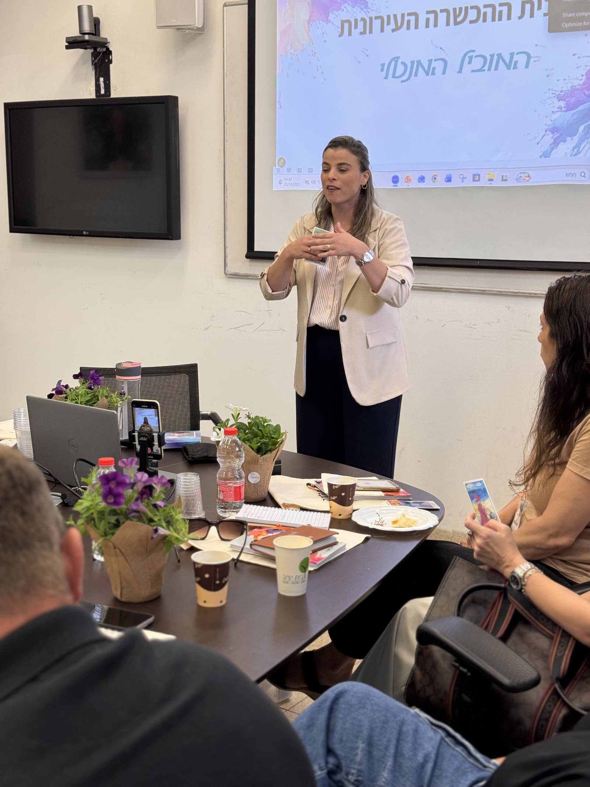
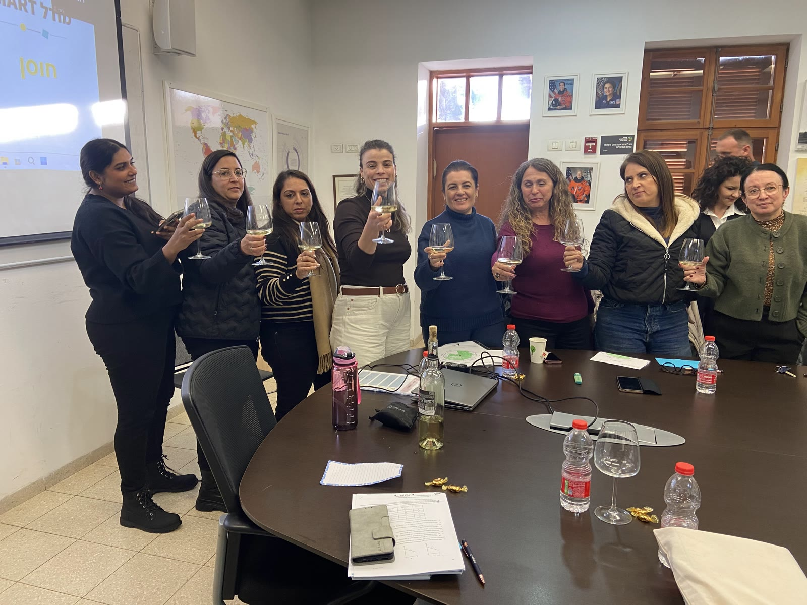
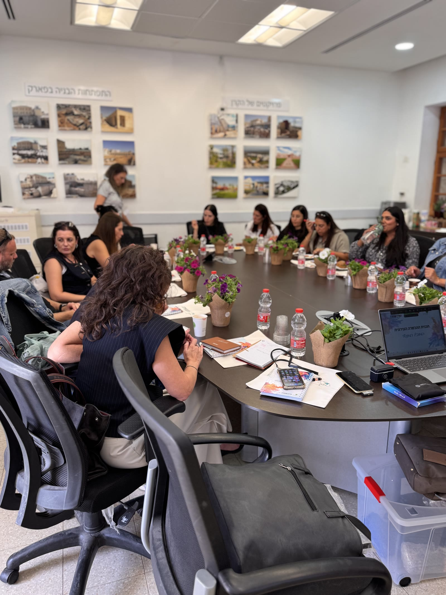
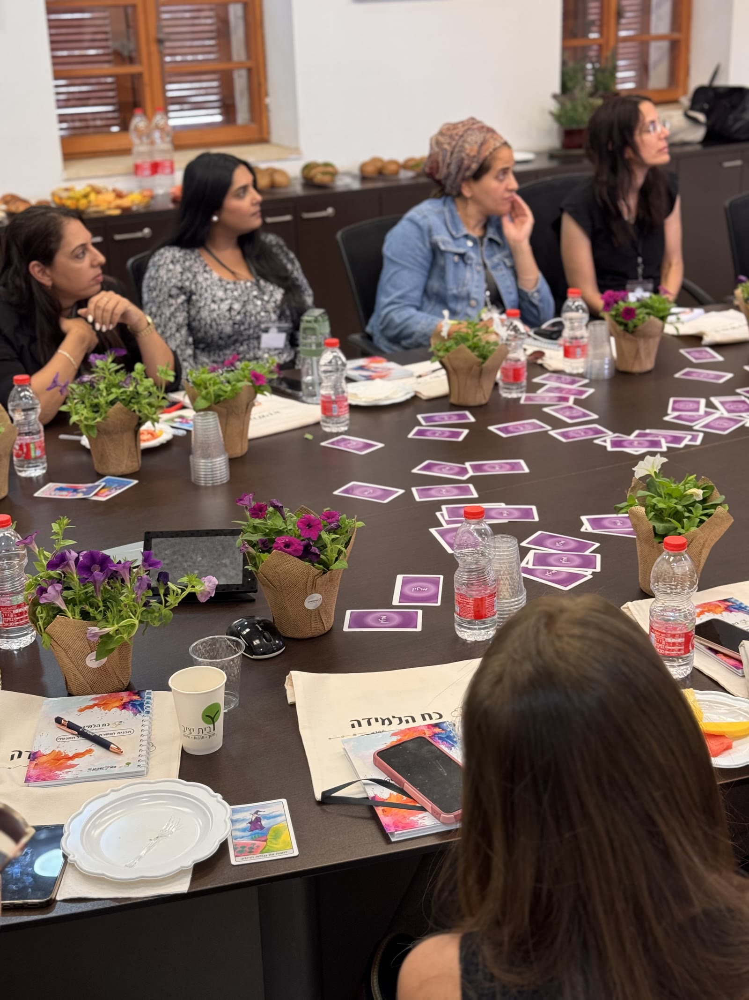
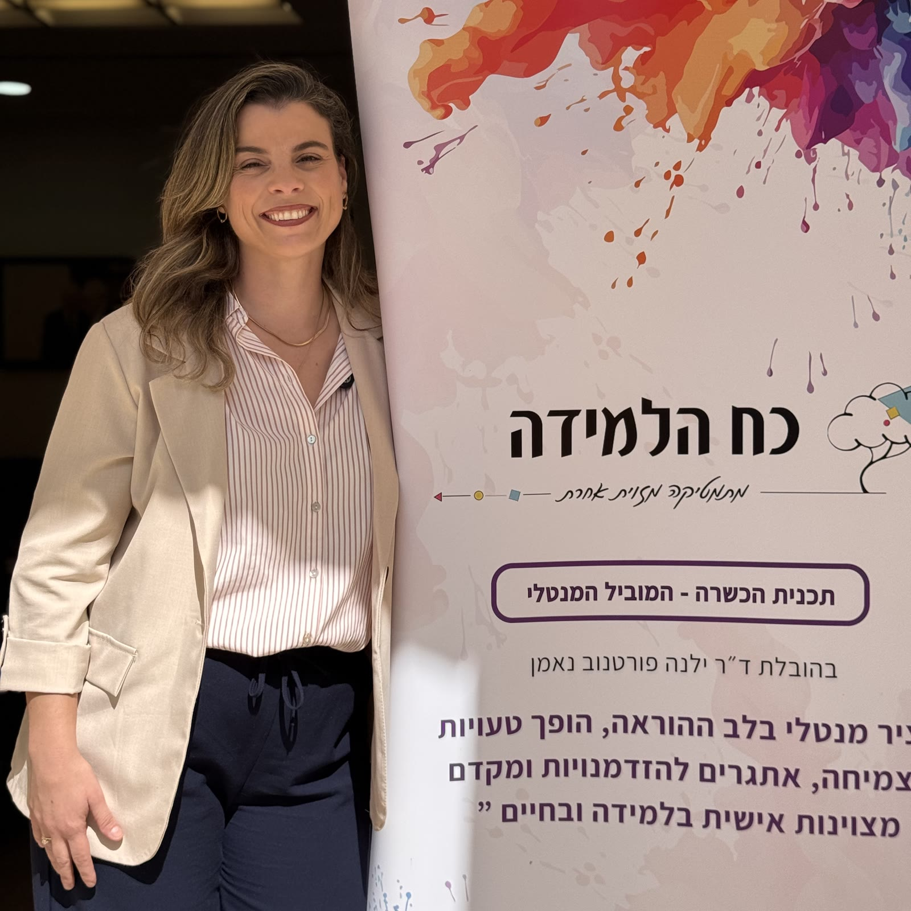
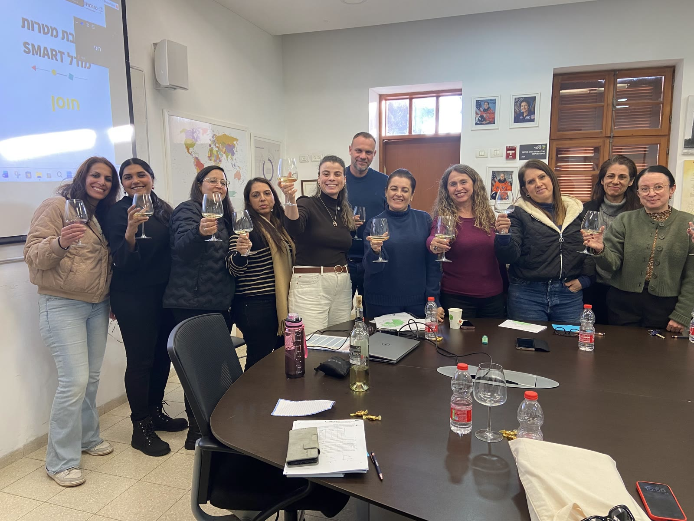
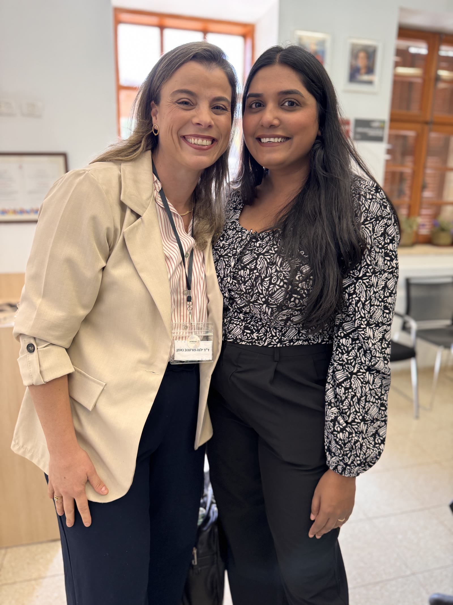

The Mental Leader in Mathematics is a citywide teacher leadership model that transforms mathematics classrooms into spaces of resilience, confidence, self-efficacy, flexible thinking and learning from mistakes.
Instead of supporting one school at a time, the program develops mathematics teachers as mindset-based learning leaders who expand the impact across schools, teachers and students.
For many students, mathematics is not only an academic subject. It is often a space of fear, failure, avoidance and low self-confidence. When students believe that mistakes mean they are “not good at mathematics”, they stop asking questions, avoid challenge and disconnect from the learning process.
In many education systems, the response to low achievement focuses mainly on more practice, more instruction and more assessment. These are important, but they are not enough. To improve mathematics outcomes, students also need the mental and emotional conditions that allow them to persist, recover from mistakes, manage frustration and believe that progress is possible.
The program addresses this barrier by connecting mathematical learning with mindset, resilience and student agency.
Mathematics naturally invites challenge, mistakes, uncertainty, strategy and perseverance. Every mathematical problem creates an opportunity to practice how students think, respond, regulate themselves and continue when the answer is not immediate.
The Mental Leader in Mathematics uses mathematics as a structured training ground for developing learning resilience. Students learn not only how to solve problems, but how to face difficulty, analyze mistakes, ask for help, set goals and take responsibility for their progress.
Students learn to analyze errors as information for growth, not as proof of failure.
Mathematical difficulty becomes an opportunity to practice persistence and flexible thinking.
Students begin to see themselves as capable mathematical learners.
The program is designed as a municipal transformation model, not a one-school intervention. Selected mathematics teachers are trained as Mental Leaders in Mathematics. They implement mindset-based routines in their own classrooms and gradually become school-based and citywide change agents who support additional teachers and reach more students.
The program helps mathematics teachers embed mindset-based routines within high-quality mathematics pedagogy. Teachers learn to design lessons that are emotionally supportive, cognitively challenging and pedagogically innovative, so students develop both mathematical understanding and the resilience needed to succeed.
Structured routines that help students analyze errors, reflect on their thinking and use mistakes as a starting point for mathematical growth.
Tools that help students understand their learning process, identify gaps, monitor progress and take ownership of their mathematical development.
Personal learning goals, planning tools and time-management routines that build responsibility, persistence and independent learning habits.
Leveled and flexible tasks that allow students with different starting points to experience success, challenge and meaningful progress.
Teaching practices that move beyond procedural instruction and promote conceptual understanding, mathematical reasoning, discussion and active learning.
Mathematical investigations that encourage students to ask questions, explore patterns, justify ideas and develop deeper understanding.
Classroom projects that connect mathematics to real-world contexts, creativity, collaboration and meaningful application.
Responsible use of generative AI to help teachers create differentiated tasks, adapt explanations, design inquiry activities and support innovative mathematics learning.
The strength of the model lies in the integration: teachers do not teach mindset separately from mathematics. They embed resilience, self-efficacy, reflection and learning from mistakes into the daily pedagogy of mathematics instruction.
The mathematical mindset is not taught as a separate subject. It is embedded into the rhythm of mathematics instruction through three recurring cycles — weekly, monthly and periodic — that all feed one shared framework.
Short formative assessments that help students experience progress, identify gaps and build confidence.
This model translates the mathematical mindset approach into practical classroom routines. Instead of treating mindset as a separate lesson, teachers embed it into the rhythm of mathematics instruction through weekly success checks, monthly reflection and mistake-analysis cycles, and periodic observation and project-based evidence. This creates a consistent classroom structure that develops resilience, self-efficacy, responsibility and learning growth alongside mathematical achievement.
The program combines teacher training, classroom implementation, mentoring, observation and mixed-methods evaluation. Evidence is collected through teacher surveys, student questionnaires, self-assessment tools, achievement data, classroom reflections and qualitative testimonies.
Increase in overall class average across grades 7–11, measured across participating classrooms.
This was not another professional development course. It changed how I think about my role as a mathematics teacher.
I started using mistakes not only as something to correct, but as a starting point for learning.
When we began speaking about progress, effort and mistakes, students who usually avoid participation became more engaged.
The tools were practical. I could take them directly into my classroom.
Hear from participating mathematics teachers about how the program changed classroom conversations, student confidence and the way mistakes are used as part of learning.







A single-school program can improve local practice. A citywide model can change the professional culture of mathematics learning across an entire education system.
The Mental Leader in Mathematics builds a municipal network of trained mathematics teachers who share the same language, use aligned practices and support each other as leaders. This creates continuity across schools and allows the city to encourage more students to choose, persist and succeed in mathematics.
Dr. Yelena Portnov-Neeman is a lecturer and researcher in mathematics education, specializing in mathematical mindset, teacher professional development and the connection between learning, resilience and achievement. She leads innovative mathematics education programs that help teachers and students experience mathematics as a space for growth, confidence and personal excellence.
Through her work in schools, municipalities, teacher training programs and academic settings, Dr. Portnov-Neeman develops practical models that connect research, pedagogy and measurable field implementation.
Founder and Lead Developer, The Mental Leader in MathematicsThe program is designed for municipalities, school networks, education departments and organizations seeking to strengthen mathematics learning through teacher leadership, mindset-based pedagogy and measurable impact.